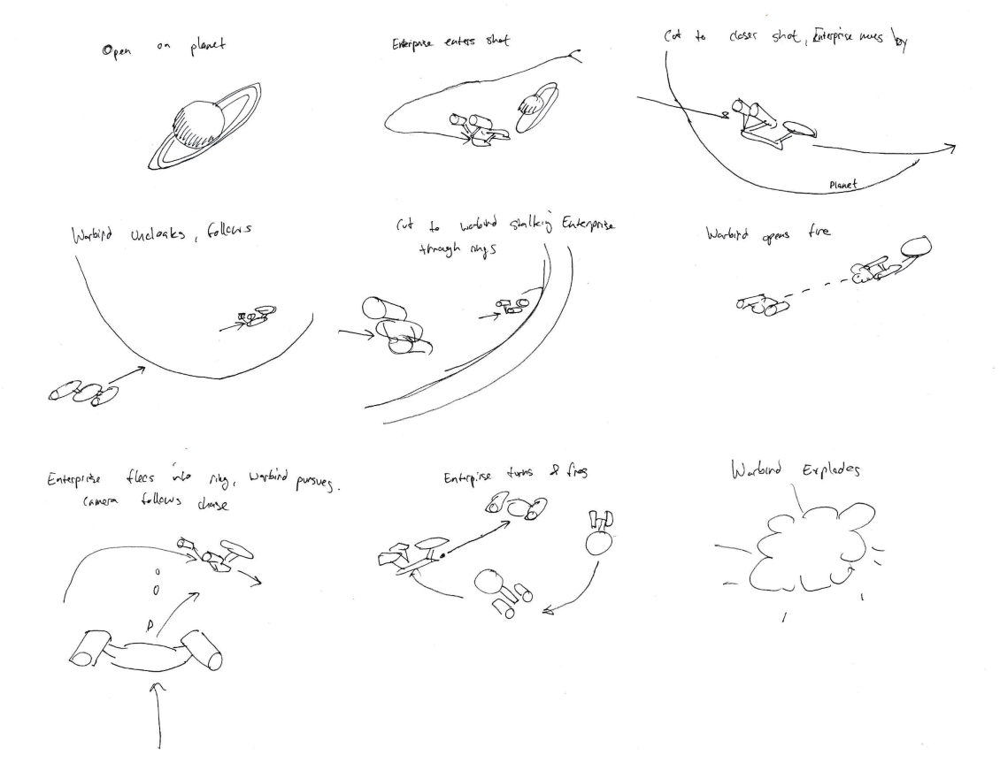
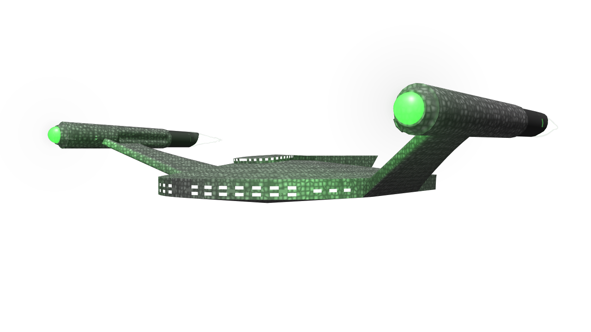
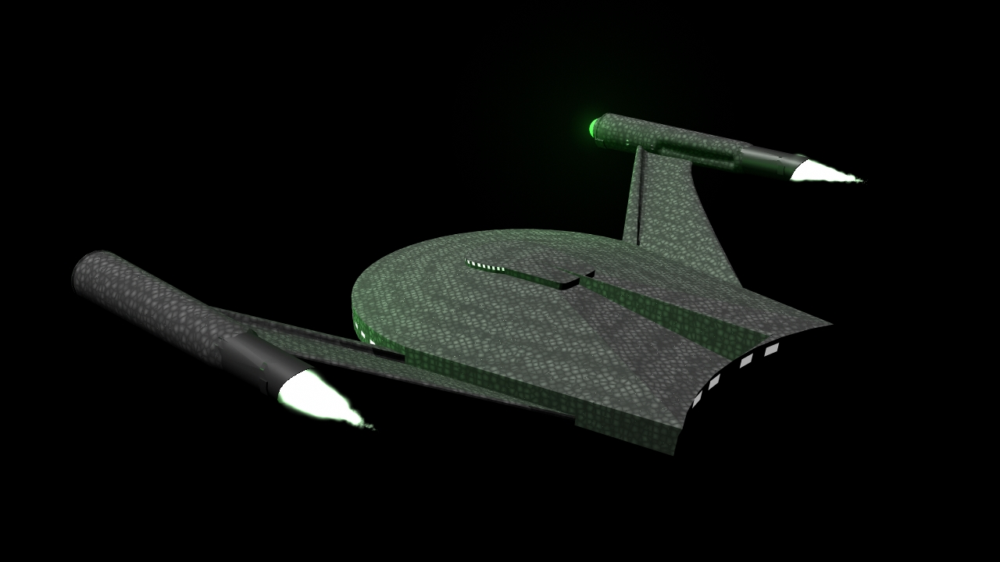
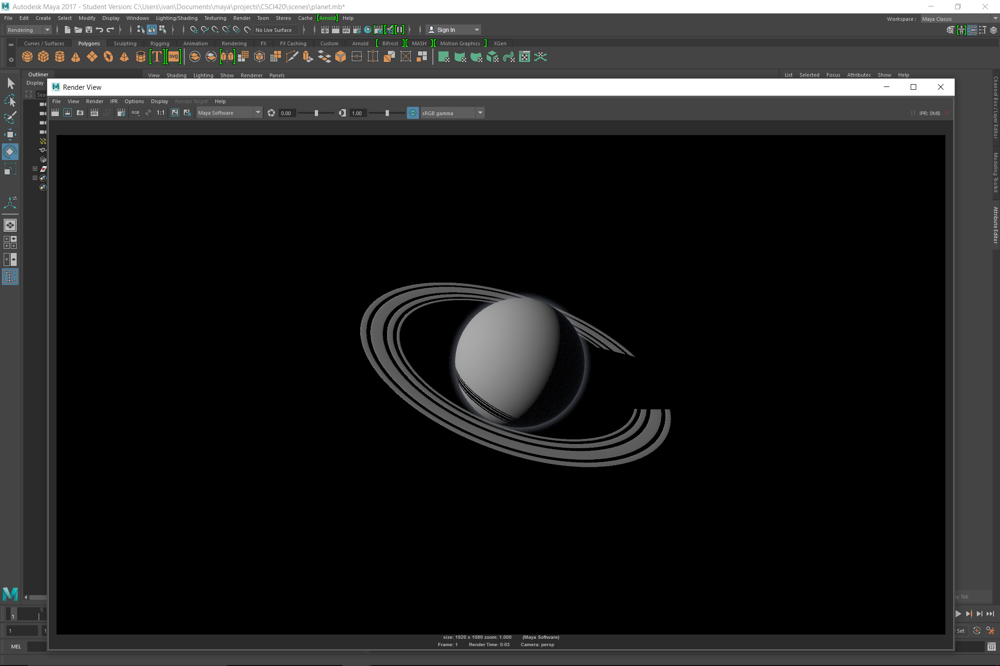
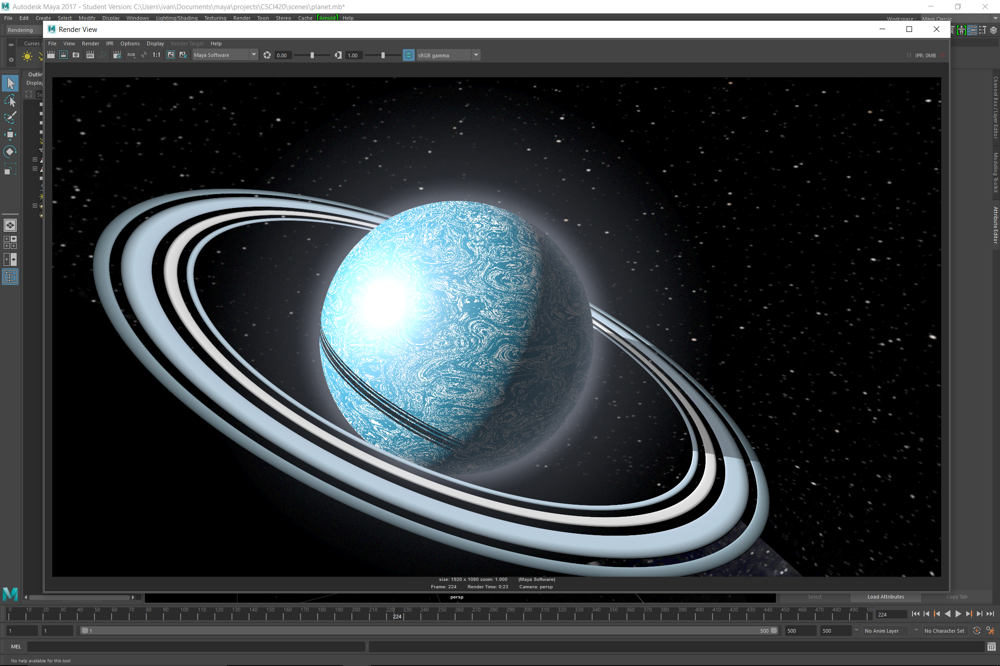
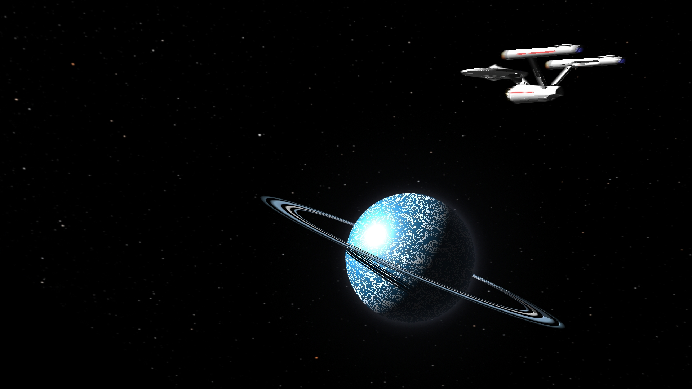
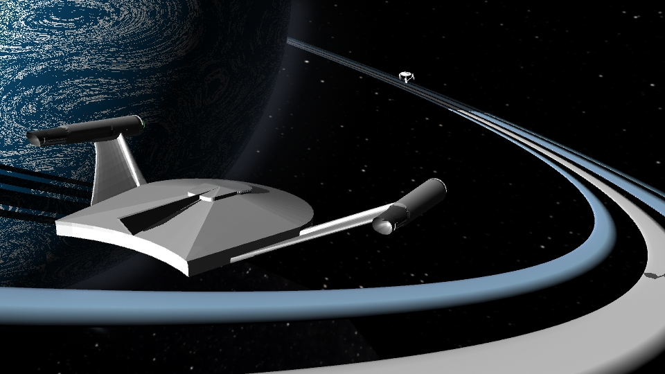
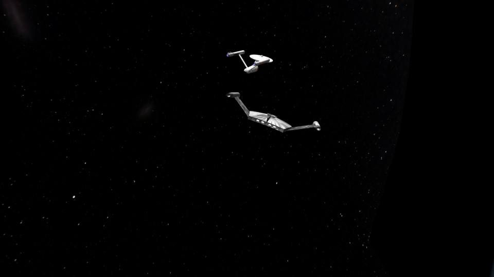

Computer Animation
Spring 2017
Due 5/10/2017
Mitchell Kucy and Ivan Echevarria
For our final project, we decided to make a space battle between the star ship Enterprise and a Romulan Warbird. Our plans for the animation went through several iterations before coming to the sequence that we have today.
The Enterprise is approaches a planet in the Neutral Zone, and it gets the attention of a cloaked Romuian Warbird. The Warbird stalks the Enterprise until it opens fire, and a space combat dogfight ensues. The Enterprise, though battered by the Warbird's disruptors, gets the better of the opposing ship and fires a photon torpedo (using the Picard Maneuver) that strikes a fatal blow. The Enterprise then enters maximum warp and leaves the Neutral Zone.
We put a lot of effort into the models and particle effects in this animation - perhaps half our time was spent optimizing the number of lights and particles so our render time was reasonable. Mitchell had already built the Enterprise for a previous project, so he got to work on the Warbird. Using a number of reference images, he built a very accurate model of the ship.
I worked on planet model. I started out with a sphere, some flattened pipes, and a spherical volume primitive to give the impression of an atmosphere. I then smoothed all the geometry a few times to prevent any facets from being visible even in close-ups.
From here, I added a mountain texture in a Blinn shader and then added noise to the mountain texture to give it distinctive swirls. This gave the impression of a watery ice planet. I used a gradient on the rings to the impression of varying intensity - when you look at images of Saturn, its rings exhibit this effect.
I also put a great deal of effort into getting the Romulan disruptor to look good. To avoid manually keyframing all the times it fires, I made a particle emitter that targeted a cube that surrounds the Enterprise that is invisible. This made performance better - the Enterprise's geometry is complex and worked poorly with the particles. An early video test of this method is below.
Mitchell worked hard on making the particle effects look good for our animation. Below is an explosion particle effect that plays when the Warbird is hit by the Enterprise.
To get the the stars in our animation, we used an asset provided by the Hayden Planetarium.
I added sound effects to the animation to give some oomph to the pursuit and combat. Below is a cut of the animation without music.
Below are three of the images from the final animation - because of the renders' instability, we saved individual images and turned them into videos later.
  We ran into some severe performance issues with this animation. Render times were in excess of a minute at low resolutions, so we had to pare down the lighting in the scene. As a consequence, the final animation isn't as pretty as some of the stills we got while getting it together. In addition, we were forced to use the hardware renderer for a few shots because Maya would crash if we attempted to render the frames with any other renderer. We spent a significant amount of time working out these kinks, but the animation largely reflects our original vision.